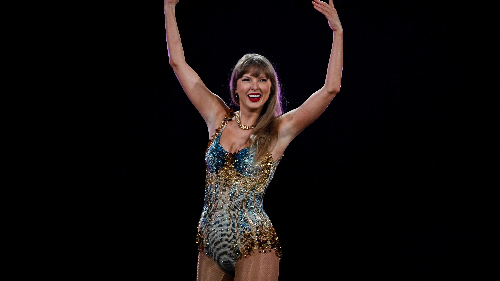

I love T Swizzle
Taylor Swift is a celebrity/singer/songwriter. Taylor grew up on a christmas tree farm in Pensylvania where she developed a love for music and ended up moving to Nashville. At only 14 she was signed by a record label and ever since her career has skyrocketed. After releasing over 10 albums and numerous tours she decided to go on 'The Eras Tour'. On this tour she sings different songs from 10 of her albums. Her preformance of 46 songs makes a preformance three and a half hours long! It became the highest grossing tour of all time with over 10 million fans coming to watch her. back in 2023 at a Seattle show, fans caused an earthquake equivalent of a 2.3 magnitude earthquake. Taylor coming has boosted the global economy by 9 billion dollars!
